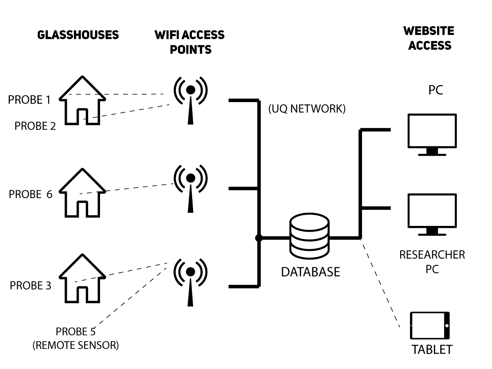

Monitor the environmental data within glasshouse.
UQ Glasshouse Monitors is a wireless environment monitor designed for use in a glass house, with data displayed online to researchers. With multiple sensors, users are able to see an overview of all data, saving time and resources crucial to making breakthroughs in science.
Log in to access the system.
Log in
